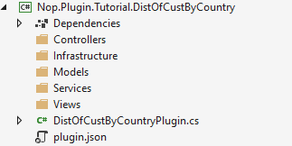
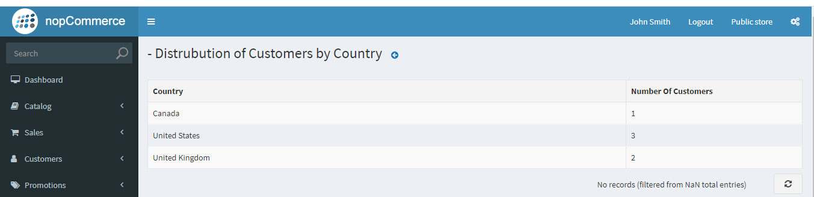

使用 DataTables
在本教學中，我們將學習如何透過自訂功能來擴充 nopCommerce 管理後台的功能，並建立一個包含資料表格的頁面作為報表。在開始本教學之前，您需要先具備一些相關主題的知識與理解。
如果您不熟悉上述主題，我們強烈建議您先進行了解。
本教學將示範如何建立一個表格，用來顯示使用者按國家（根據帳單地址）分佈的相關資訊。讓我們逐步完成建立上述功能的過程。
建立一個 nopCommerce 外掛專案
我們假設您已經知道如何建立一個 nopCommerce 外掛專案，以及如何依照 nopCommerce 標準來設定該專案。如果您還不知道，可以前往 此頁面 學習如何建立並設定 nopCommerce 外掛專案。
如果您已依照上述提供的連結建立並設定了您的外掛專案，那麼您最終應該會得到如下的資料夾結構。

Models/CustomersDistribution.cs
首先，讓我們在 Models 資料夾中建立一個名為 CustomersDistribution 的模型。
public record CustomersDistribution : BaseNopModel
{
/// <summary>
/// Country based on the billing address.
/// </summary>
public string Country { get; set; }
/// <summary>
/// Number of customers from a specific country.
/// </summary>
public int NoOfCustomers { get; set; }
}
接著，讓我們在 Models 資料夾中加入名為 CustomersByCountrySearchModel 的搜尋模型。
public record CustomersByCountrySearchModel : BaseSearchModel
{
}
nopCommerce 使用 Repository 模式進行資料存取，這非常適合相依性注入機制。
Services/ICustomersByCountry.cs
現在讓我們建立一個從資料庫取得所需資料的服務。針對此服務，我們將建立一個介面，以及一個實作該介面的服務類別。
public interface ICustomersByCountry
{
Task<List<CustomersDistribution>> GetCustomersDistributionByCountryAsync()
}
Services/CustomersByCountry.cs
在這裡，我們建立了一個名為 CustomersByCountry 的類別，它實作了 ICustomersByCountry 介面。
public class CustomersByCountry : ICustomersByCountry
{
private readonly IAddressService _addressService;
private readonly ICountryService _countryService;
private readonly ICustomerService _customerService;
public CustomersByCountry(IAddressService addressService,
ICountryService countryService,
ICustomerService customerService)
{
_addressService = addressService;
_countryService = countryService;
_customerService = customerService;
}
public async Task<List<CustomersDistribution>> GetCustomersDistributionByCountryAsync()
{
return await _customerService.GetAllCustomersAsync()
.Where(c => c.ShippingAddressId != null)
.Select(c => new
{
await (_countryService.GetCountryByAddressAsync(_addressService.GetAddressById(c.ShippingAddressId ?? 0))).Name,
c.Username
})
.GroupBy(c => c.Name)
.Select(cbc => new CustomersDistribution { Country = cbc.Key, NoOfCustomers = cbc.Count() }).ToList();
}
}
我們實作了該介面中從資料庫擷取資料的方法。我們採用這種方式，是為了能夠使用相依性注入技術將此服務注入到控制器中。
Infrastructure/PluginNopStartup.cs
為了在相依性注入 (DI) 容器中註冊我們的介面及其實作，我們需要建立一個實作 INopStartup 介面的類別。此介面包含兩個方法和一個屬性。我們的主要重點是實作 ConfigureServices 方法，我們將在此處向 DI 容器註冊我們的介面。
/// <summary>
/// Represents object for the configuring services on application startup
/// </summary>
public class PluginNopStartup : INopStartup
{
/// <summary>
/// Add and configure any of the middleware
/// </summary>
/// <param name="services">Collection of service descriptors</param>
/// <param name="configuration">Configuration of the application</param>
public void ConfigureServices(IServiceCollection services, IConfiguration configuration)
{
//register custom services
services.AddScoped<ICustomersByCountry, CustomersByCountry>();
}
/// <summary>
/// Configure the using of added middleware
/// </summary>
/// <param name="application">Builder for configuring an application's request pipeline</param>
public void Configure(IApplicationBuilder application)
{
}
/// <summary>
/// Gets order of this startup configuration implementation
/// </summary>
public int Order => 3000;
}
Controllers/CustomersByCountryController.cs
現在讓我們建立一個控制器類別。為外掛控制器命名的一個良好做法是使用 {Group}{Name}Controller.cs。例如 TutorialCustomersByCountryController，這裡即為 {Tutorial}{CustomersByCountry}Controller。但請記住，使用 {Group}{Name} 來命名控制器並非強制要求，這只是 nopCommerce 推薦的命名方式，而名稱中包含 Controller 字樣則是 .Net MVC 的要求。
[AutoValidateAntiforgeryToken]
[AuthorizeAdmin] //confirms access to the admin panel
[Area(AreaNames.Admin)] //specifies the area containing a controller or action
public class DistOfCustByCountryPluginController : BasePluginController
{
private readonly ICustomersByCountry _service;
public DistOfCustByCountryPluginController(ICustomersByCountry service)
{
_service = service;
}
[HttpGet]
public IActionResult Configure()
{
CustomersByCountrySearchModel customerSearchModel = new CustomersByCountrySearchModel
{
AvailablePageSizes = "10"
};
return View("~/Plugins/Tutorial.DistOfCustByCountry/Views/Configure.cshtml", customerSearchModel);
}
[HttpPost]
public async Task<IActionResult> GetCustomersCountByCountry()
{
try
{
return Ok(new DataTablesModel { Data = await _service.GetCustomersDistributionByCountryAsync() });
}
catch (Exception ex)
{
return BadRequest(ex);
}
}
}
在控制器中，我們注入了先前建立的 ICustomersByCountry 服務，以便從資料庫取得資料。這裡我們建立了兩個 Action，一個類型為 HttpGet，另一個類型為 HttpPost。Configure action 會回傳一個名為 "Configure.cshtml" 的檢視（View），我們尚未建立該檔案。而 GetCustomersCountByCountry action 則使用已注入的服務來擷取資料，並以 JSON 格式回傳。此 action 將由資料表格（data table）呼叫，該表格預期會接收 DataTablesModel 物件作為回應。因此，我們在此設定了 data 屬性，這就是將要在表格中呈現的資料。
Views/Configure.cshtml
現在，讓我們建立一個包含 DataTables 的檢視，在其中顯示我們的資料，並讓使用者能夠檢視這些資料。
@using Nop.Web.Framework.Models.DataTables
@{
Layout = "_ConfigurePlugin";
}
@await Html.PartialAsync("Table", new DataTablesModel
{
Name = "customersDistributionByCountry-grid",
UrlRead = new DataUrl("GetCustomersCountByCountry", "TutorialCustomersByCountry"),
Paging = false,
ColumnCollection = new List<ColumnProperty>
{
new ColumnProperty(nameof(CustomersDistribution.Country))
{
Title = "Country",
Width = "300"
},
new ColumnProperty(nameof(CustomersDistribution.NoOfCustomers))
{
Title = "Number Of Customers",
Width = "100"
}
}
})
Views/_ViewImports.cshtml
_ViewImports.cshtml 檔案包含匯入檢視檔案所需之所有參考的程式碼。
@inherits Nop.Web.Framework.Mvc.Razor.NopRazorPage<TModel>
@addTagHelper *, Microsoft.AspNetCore.Mvc.TagHelpers
@addTagHelper *, Nop.Web.Framework
@using Microsoft.AspNetCore.Mvc.ViewFeatures
@using Nop.Web.Framework.UI
@using Nop.Web.Framework.Extensions
@using System.Text.Encodings.Web
@using Nop.Plugin.Tutorial.DistOfCustByCountry.Models
@using Nop.Web.Framework.Models.DataTables;
@using Microsoft.AspNetCore.Routing;
- 在
Configure.cshtml中，我們使用了一個名為Table的部分檢視（partial view）。這是 nopCommerce 對 JQuery DataTables 的實作。我們可以在Nop.Web/Areas/Admin/Views/Shared/Table.cshtml路徑下找到此檔案。您可以在其中看到 DataTables 的實作程式碼。此檢視模型（view model）採用DataTablesModel類別來進行 DataTables 的設定。讓我們說明為DataTablesModel類別所設定的屬性： - Name： 這將被設定為 DataTables 的 id。
- UrlRead： 這是 DataTables 用來擷取資料以在表格中呈現的 URL。在此我們將 URL 設定為
TutorialCustomersByCountry控制器中的GetCustomersCountByCountryAction，我們從該處取得 DataTables 所需的資料。 - Paging： 此屬性用於啟用或停用 DataTables 的分頁功能。
- ColumnCollection： 此屬性持有欄位的設定內容。
還有許多其他屬性，您可以試著操作它們，以了解每個屬性的用途。
Infrastructure/RouteProvider
現在最後一個步驟是為 "TutorialCustomersByCountry" 控制器的 "GetCustomersCountByCountry" 動作（Action）註冊路由。我們不需要為 "Configure" 動作註冊路由，因為我們已經在 DistOfCustByCountryPlugin 類別中註冊過了。
/// <summary>
/// Represents plugin route provider
/// </summary>
public class RouteProvider : IRouteProvider
{
/// <summary>
/// Register routes
/// </summary>
/// <param name="endpointRouteBuilder">Route builder</param>
public void RegisterRoutes(IEndpointRouteBuilder endpointRouteBuilder)
{
//add route for the access token callback
endpointRouteBuilder.MapControllerRoute("CustomersDistributionByCountry", "Plugins/Tutorial/CustomerDistByCountry/",
new { controller = "TutorialCustomersByCountry", action = "GetCustomersCountByCountry" });
}
/// <summary>
/// Gets a priority of route provider
/// </summary>
public int Priority => 0;
}
Note
若要了解更多關於 nopCommerce 路由的資訊，請造訪 此頁面。
現在只需建置您的專案並執行它。以管理員身分登入，並前往 設定 底下的 LocalPlugins 選單，您將會在該處看到您剛建立的外掛。請安裝該外掛。安裝完成後，您會在您的外掛中看到一個 configuration 按鈕。如果您已正確按照本教學進行操作，您將會看到類似下圖的輸出結果：
